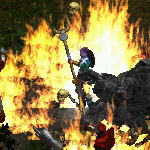
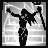

+ Sorceress +
THE SORCERESS
The Median XL sorceress class employs devastating spells and powerful wards to protect her should she choose to fight in melee combat.
BACKGROUND OF THE MEDIAN XL SORCERESS
The Zann Esu covens have always been regarded with suspicion by the other mage clans of Sanctuary. Although their mastery of elemental magic was undeniable, the witch covens keep away from society and adhere to strict ethical rules and their own religion of nature worship.
Their secluded lifestyle and mysterious powers gave rise to rumours among the common folk about hexcraft and a pact with the devil. Members of the covens were hunted down as witches and prosecuted by the Church until the witches finally fled deep into the forests to the underground city of Zann Rok, never to be seen again.
Now more myth than history, folk tales of the Zann Esu tell of haunting chants and dances to the full moon deep in the forest and unearthly spirits hunting down and slaying any witnesses to the spectacle...
BASE STATS
Chance to block: 4%
Strength: 10
Dexterity: 25
Vitality: 15 (6 5 life)
Energy: 35 (35 mana)
+25 life, +15 mana per level
Gains +2 life per point into vitality
Gains +4 mana per point into energy
PREFERRED WEAPONS
Sorceresses are adept at the use of magical staves and orbs as channelling foci for their spells. The smaller orbs are one-handed, enabling the spellcaster to carry a shield. However, staves are more efficient and allow the sorceress to cast her spells much faster.
Battlemage warriors are often seen wielding crystal swords or the Zann Esu’s mystical warp blades. A combination of channelling athame and war sword, warp blades create energy ripples that enable the wielder to strike multiple enemies in a single swing!
Base cast rate increased when wielding a staff.
Class-specific 1h weapon: Orb
Class-specific 1h weapon: Warp Blade (On hit: deals area effect damage)
Also uses staves
PREFERRED ARMOUR
Because traditional warrior plate is cumbersome and impedes mobility and spell casting, the ancient mage clans created their own exotic designs that allow for easy movement and precise gestures. Though the knowledge to create this armour has been lost to the ages, you may come across one of the few surviving Eastern kazarghands, Khanduran lamellar plates or the splendid Kehjistani ceremonial armours...
Class-specific body armor: Sorceress Armor
ELEMENTAL SPECIALIZATION
If a sorceress wishes to become a master of her arts, she must devote her studies and training to no more than two elemental powers.
The Zann Esu believe that magi who dabble in many arts at once lack the patience and discipline required to properly serve the elemental aspects of the Deity. Zann Esu neolytes are consecrated to two elements of nature at their rite of passage and are forbidden to study the other elements. Those who violate this sacred rule are excommunicated.
You can only learn two elements out of four (fire, cold, lightning, poison).
FIRE SKILLS
| Name | Icon | Effect |
|---|---|---|
| Retaliate | The novice of the flame learns to summon the elemental energies and bombard the ranks of her
enemies with explosive bolts of flame. Effect: casts multiple exploding fireballs |
|
| Living Flame | The element of fire represents destruction, but also rebirth and renewal. By calling upon these
aspects of the elemental flame, the initiate sorceress can rapidly mend her wounds. Passive effect: regenerates life and increases max life |
|
| Flamestrike |  |
Like a cleansing forest fire, this raging pillar of flame eradicates the demonic taint from the
area, allowing the corrupted Earth to heal and new life to sprout from the ashes. Effect: calls down a blast of flame |
| Pyroblast |  |
The sister of the flame summons a massive ball of fire and casts it at her demonic enemies. The
globe bursts on impact, engulfing the enemy in her flames of vengeance. Effect: fireball that sets flame to the area around impact |
| Firedance |  |
Queen of heaven, queen of hell, horned hunter of the night! The priestess calls upon the aspects
of the twin deities in a circle of sacred fire to add her divine power to her spells. Effect: circle of flame increases spell damage |
COLD SKILLS
| Name | Icon | Effect |
|---|---|---|
| Shatter the Flesh |  |
Using this spell, the acolyte of winter causes the frozen heart of a fallen fiend to shatter and
explode in a blast of freezing ice. Effect: detonates a corpse, freezing and damaging enemies |
| Frigid Sphere | An improved version of the Frozen Orb, the Frigid Sphere spell eschews the mass shedding
process and explodes at a point of the caster's choosing, focussing all of its energy into its
final destructive blast. Effect: orb explodes at target point, causing massive damage |
|
| Snow Queen |  |
Vengeance and the Goddess have in common that they are best served cold. Lowering her body
temperature to glacial levels, the priestess of winter manifests a protective second skin of
magical ice. Passive effect: increases defense and maximum health |
| Abyss |  |
The adept of winter summons a whirling maelstrom of freezing ice and wind. Those standing in the
eye of the storm are spared while her fury rages around them. Effect: surrounds target point with a spiral of frost |
| Summon Ice Elementals | |
A follower of the path of winter never has to face evil alone, for the spirits of the Deity
accompany and guide those who listen to their silent whispers. Effect: summons ice spirits with a freezing nova attack |
LIGHTNING SKILLS
| Name | Icon | Effect |
|---|---|---|
| Forked Lightning |  |
Before formally commencing their studies, novices of the storm are sent to observe the monsoons
and commune with the sky spirits until the magic comes naturally to them. Effect: casts multiple snaking lightning bolts |
| Thunderstone | This mysterious mineral is found at the site of a lightning strike. It is a powerful natural
piezo-electric capacitor and will unleash the charge from the bolt that created it when exposed
to a physical shock. Effect: throw a rock that explodes into charged bolts on the ground |
|
| Tempest |  |
A cascade of static lightning arcs from the stormfury to nearby enemies, blasting through them
and leaving only destruction and a high voltage glow in its wake. Effect: casts lightning bolts at all nearby enemies |
| Warp Armor |  | A magnetic field protects the adept stormfury by deflecting swords and claws and mysteriously
causing arrows to deviate from their path. Passive effect: increases defense rating and causes attacks to miss |
| Nova Charge | This ritual establishes a strong electrical charge between the caster and the earth. The
approach of an unprotected enemy triggers a cascade of electrical blasts. Effect: periodically casts shock novas when enemies are nearby |
POISON SKILLS
| Name | Icon | Effect |
|---|---|---|
| Lorenado | Book curses are fearsome, but are not typically employed as combat magic. Developed on the first
of Ostara as a deadly joke, this small energy twister blows a swirl of forbidden books into the
enemy's face. Effect: advancing whirlwind of deadly books |
|
| Vengeful Power | An eye for an eye, a curse for a curse. Centuries of persecution and torture taught the Zann Esu
the only law the ungifted live by. Passive effect: damages attackers and boosts spell damage when struck |
|
| Miasma | This expanding field of sticky slime seems to have a life of its own, attaching itself to
enemies and filling their thoughts with maddening hallucinations. Effect: field of poison that lowers attack rating and movement speed |
|
| Carpet of Spiders | The adept witch creates a magical cyst in an enemy of her choosing, which bursts into a deluge
of poisonous giant tarantulas. Effect: a hundred spiders emerge from the target enemy |
|
| Hive | Those seeking to harm the witch queen are set upon by swarms of biting and stinging insects that
mysteriously seem to appear out of thin air. Effect: periodically creates poisonous swarms when approached |
ARCANE SKILLS
| Name | Icon | Effect |
|---|---|---|
| Moonstrike |  |
This mystical combat technique uses the battlemage's crystal weapon as a spell focus, creating a
protective barrier that lasts for as long as she remains on the front line. Effect: melee attack that adds damage and increases life |
| Familiar |  |
Familiars are enchanted creatures kept to perform mundane tasks for the wizard and empower their
magic. The Zann Esu adopted the black cat as their familiar of choice, polymorphed into a
panther for battle purposes. Effect: black panther familiar with an aura that increases magic ability |
| Arcane Torrent | Energy conversion from raw mana to elemental power may be fairly efficient, but the mystical
force itself is a weapon in its own right. Effect: energy wave that deals damage based on the caster's mana |
|
| Mana Sweep | Magic users regenerate their powers by slowly absorbing mana from the environment. This spell
greatly speeds up the process, causing a devastating pressure wave of energy that flattens
nearby enemies. Effect: steals mana and damages enemies based on mana lost |
|
| Bladestorm | The victim of the battlemage’s fury is assaulted with a legion of immaterial blades, all that
remains of an ancient army of raiders that was destroyed at the walls of Zann Rok. Effect: melee attack that unleashes homing magical swords |
UBERSKILLS
You may choose a single uberskill at character level 90.
| Name | Icon | Effect |
|---|---|---|
| Chronofield | Time magic is forbidden by the ruling mage clans, but desperate times call for desperate
measures. The time field slows down enemies to a relativistic crawl, making them easy prey. Effect: slows movement and attack of enemies caught in the field |
|
| Witch Blood | There is more to spellcasting than knowing the incantations. One also needs to be born with the
Gift, inherited from an ancient bloodline of witches. It follows that when the mage's blood is
spilled, so vanishes her power. Passive effect: increases spell damage when life is full |
|
| Baneblade |  |
To protect themselves from the antimagic tricks of the witch hunters, the Zann Esu trained
several of their people as arcane warriors, queens of the magical blade. Effect: improves melee combat ability and defense |
ENNEAD SKILL
After completing the Ennead Challenge and keeping the Class Charm in the inventory while at character level 90 and above, you can invest points in this skill.
See THIS PAGE for more information about the Ennead Challenge.
| Name | Icon | Effect |
|---|---|---|
| Symbol of Esu* |  |
The symbol of the ancient witch queen is a specially crafted conductive adamantine moon crescent
that accumulates ambient energy from the magic in the environment, releasing it as a healing
pulse when broken. Effect: consume a moon symbol that instantly heals life and mana |
*Symbols of Esu are sold by Jamella in act IV
BLACK ROAD SKILL
After completing the Black Road Challenge and keeping the Class Charm in the inventory, you can invest points in this skill.
See THIS PAGE for more information about the Black Road Challenge.
| Name | Icon | Effect |
|---|---|---|
| Arcane Fury | Hell hath no Fury like a woman scorned. This metamagic ability drastically speeds up
spellcasting, movement and mana regeneration for a short period of time. Effect: temporarily increases casting speed and mana regeneration |
INNATE SKILL
Sorceresses start with the following skill in their icon list.
| Name | Icon | Effect |
|---|---|---|
| Force Wall |  |
Using this simple cantrip, the apprentice summons a wall of solid mana, keeping her enemies at a
safe distance for a few precious seconds. Effect: wall of energy that repels enemies |